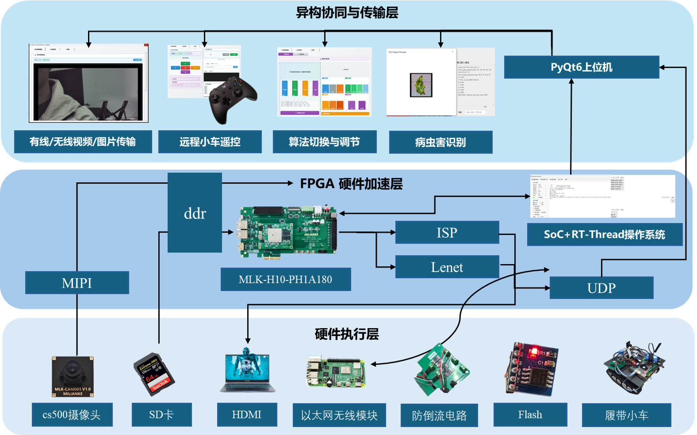

异构计算平台
基于 FPGA 与 SoC 构建协同架构，利用 FPGA 的并行处理能力完成关键链路加速，降低系统时延。
Flagship Project
这是一个面向复杂环境感知场景的系统级项目。我们围绕图像采集、ISP 加速、 网络传输与边缘识别构建完整链路，目标不是做单点模块，而是让采、传、算、显真正协同起来。
项目背景
面向地震、核辐射、深海等极端环境，系统常见问题是感知延迟高、链路不稳定、边缘侧处理能力有限。 这个项目的核心挑战，在于如何在资源、时延和稳定性之间取得平衡。
我的工作重点不只是做出某一个模块，而是参与把整套系统从硬件架构、接口联调、实时传输到边缘识别逐步打通， 最终让它能作为一个可展示、可验证、可复用的工程方案成立。
System Design
基于 FPGA 与 SoC 构建协同架构，利用 FPGA 的并行处理能力完成关键链路加速，降低系统时延。
集成去噪、白平衡、伽马校正、色彩增强等模块，提升复杂环境下的成像稳定性与可视质量。
通过高速网络链路实现高清视频传输，确保控制指令与图像流能够同步工作。
在异构平台上部署轻量模型，实现实时目标识别与分类，增强系统在真实场景中的决策能力。
Architecture

Outcome